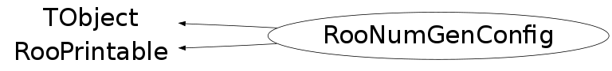

class RooNumGenConfig: public TObject, public RooPrintable
RooNumGenConfig holds the configuration parameters of the various numeric integrators used by RooRealIntegral. RooRealIntegral and RooAbsPdf use this class in the (normalization) integral configuration interface
Function Members (Methods)
public:
| RooNumGenConfig() | |
| RooNumGenConfig(const RooNumGenConfig& other) | |
| virtual | ~RooNumGenConfig() |
| void | TObject::AbstractMethod(const char* method) const |
| Bool_t | addConfigSection(const RooAbsNumGenerator* proto, const RooArgSet& defaultConfig) |
| virtual void | TObject::AppendPad(Option_t* option = "") |
| virtual void | TObject::Browse(TBrowser* b) |
| static TClass* | Class() |
| virtual const char* | TObject::ClassName() const |
| static void | cleanup() |
| virtual void | TObject::Clear(Option_t* = "") |
| virtual TObject* | TObject::Clone(const char* newname = "") const |
| virtual Int_t | TObject::Compare(const TObject* obj) const |
| virtual void | TObject::Copy(TObject& object) const |
| static RooNumGenConfig& | defaultConfig() |
| virtual Int_t | RooPrintable::defaultPrintContents(Option_t* opt) const |
| static ostream& | RooPrintable::defaultPrintStream(ostream* os = 0) |
| virtual RooPrintable::StyleOption | defaultPrintStyle(Option_t* opt) const |
| virtual void | TObject::Delete(Option_t* option = "")MENU |
| virtual Int_t | TObject::DistancetoPrimitive(Int_t px, Int_t py) |
| virtual void | TObject::Draw(Option_t* option = "") |
| virtual void | TObject::DrawClass() constMENU |
| virtual TObject* | TObject::DrawClone(Option_t* option = "") constMENU |
| virtual void | TObject::Dump() constMENU |
| virtual void | TObject::Error(const char* method, const char* msgfmt) const |
| virtual void | TObject::Execute(const char* method, const char* params, Int_t* error = 0) |
| virtual void | TObject::Execute(TMethod* method, TObjArray* params, Int_t* error = 0) |
| virtual void | TObject::ExecuteEvent(Int_t event, Int_t px, Int_t py) |
| virtual void | TObject::Fatal(const char* method, const char* msgfmt) const |
| virtual TObject* | TObject::FindObject(const char* name) const |
| virtual TObject* | TObject::FindObject(const TObject* obj) const |
| const RooArgSet& | getConfigSection(const char* name) const |
| RooArgSet& | getConfigSection(const char* name) |
| virtual Option_t* | TObject::GetDrawOption() const |
| static Long_t | TObject::GetDtorOnly() |
| virtual const char* | TObject::GetIconName() const |
| virtual const char* | TObject::GetName() const |
| virtual char* | TObject::GetObjectInfo(Int_t px, Int_t py) const |
| static Bool_t | TObject::GetObjectStat() |
| virtual Option_t* | TObject::GetOption() const |
| virtual const char* | TObject::GetTitle() const |
| virtual UInt_t | TObject::GetUniqueID() const |
| virtual Bool_t | TObject::HandleTimer(TTimer* timer) |
| virtual ULong_t | TObject::Hash() const |
| virtual void | TObject::Info(const char* method, const char* msgfmt) const |
| virtual Bool_t | TObject::InheritsFrom(const char* classname) const |
| virtual Bool_t | TObject::InheritsFrom(const TClass* cl) const |
| virtual void | TObject::Inspect() constMENU |
| void | TObject::InvertBit(UInt_t f) |
| virtual TClass* | IsA() const |
| virtual Bool_t | TObject::IsEqual(const TObject* obj) const |
| virtual Bool_t | TObject::IsFolder() const |
| Bool_t | TObject::IsOnHeap() const |
| virtual Bool_t | TObject::IsSortable() const |
| Bool_t | TObject::IsZombie() const |
| virtual void | TObject::ls(Option_t* option = "") const |
| void | TObject::MayNotUse(const char* method) const |
| RooCategory& | method1D(Bool_t cond, Bool_t cat) |
| const RooCategory& | method1D(Bool_t cond, Bool_t cat) const |
| RooCategory& | method2D(Bool_t cond, Bool_t cat) |
| const RooCategory& | method2D(Bool_t cond, Bool_t cat) const |
| RooCategory& | methodND(Bool_t cond, Bool_t cat) |
| const RooCategory& | methodND(Bool_t cond, Bool_t cat) const |
| static void | RooPrintable::nameFieldLength(Int_t newLen) |
| virtual Bool_t | TObject::Notify() |
| void | TObject::Obsolete(const char* method, const char* asOfVers, const char* removedFromVers) const |
| static void | TObject::operator delete(void* ptr) |
| static void | TObject::operator delete(void* ptr, void* vp) |
| static void | TObject::operator delete[](void* ptr) |
| static void | TObject::operator delete[](void* ptr, void* vp) |
| void* | TObject::operator new(size_t sz) |
| void* | TObject::operator new(size_t sz, void* vp) |
| void* | TObject::operator new[](size_t sz) |
| void* | TObject::operator new[](size_t sz, void* vp) |
| RooNumGenConfig& | operator=(const RooNumGenConfig& other) |
| virtual void | TObject::Paint(Option_t* option = "") |
| virtual void | TObject::Pop() |
| virtual void | Print(Option_t* options = 0) const |
| virtual void | RooPrintable::printAddress(ostream& os) const |
| virtual void | RooPrintable::printArgs(ostream& os) const |
| virtual void | RooPrintable::printClassName(ostream& os) const |
| virtual void | RooPrintable::printExtras(ostream& os) const |
| virtual void | printMultiline(ostream& os, Int_t content, Bool_t verbose, TString indent = "") const |
| virtual void | RooPrintable::printName(ostream& os) const |
| virtual void | RooPrintable::printStream(ostream& os, Int_t contents, RooPrintable::StyleOption style, TString indent = "") const |
| virtual void | RooPrintable::printTitle(ostream& os) const |
| virtual void | RooPrintable::printTree(ostream& os, TString indent = "") const |
| virtual void | RooPrintable::printValue(ostream& os) const |
| virtual Int_t | TObject::Read(const char* name) |
| virtual void | TObject::RecursiveRemove(TObject* obj) |
| void | TObject::ResetBit(UInt_t f) |
| virtual void | TObject::SaveAs(const char* filename = "", Option_t* option = "") constMENU |
| virtual void | TObject::SavePrimitive(ostream& out, Option_t* option = "") |
| void | TObject::SetBit(UInt_t f) |
| void | TObject::SetBit(UInt_t f, Bool_t set) |
| virtual void | TObject::SetDrawOption(Option_t* option = "")MENU |
| static void | TObject::SetDtorOnly(void* obj) |
| static void | TObject::SetObjectStat(Bool_t stat) |
| virtual void | TObject::SetUniqueID(UInt_t uid) |
| virtual void | ShowMembers(TMemberInspector& insp) |
| virtual void | Streamer(TBuffer& b) |
| void | StreamerNVirtual(TBuffer& b) |
| virtual void | TObject::SysError(const char* method, const char* msgfmt) const |
| Bool_t | TObject::TestBit(UInt_t f) const |
| Int_t | TObject::TestBits(UInt_t f) const |
| virtual void | TObject::UseCurrentStyle() |
| virtual void | TObject::Warning(const char* method, const char* msgfmt) const |
| virtual Int_t | TObject::Write(const char* name = 0, Int_t option = 0, Int_t bufsize = 0) |
| virtual Int_t | TObject::Write(const char* name = 0, Int_t option = 0, Int_t bufsize = 0) const |
protected:
| virtual void | TObject::DoError(int level, const char* location, const char* fmt, va_list va) const |
| void | TObject::MakeZombie() |
Data Members
public:
| enum TObject::EStatusBits { | kCanDelete | |
| kMustCleanup | ||
| kObjInCanvas | ||
| kIsReferenced | ||
| kHasUUID | ||
| kCannotPick | ||
| kNoContextMenu | ||
| kInvalidObject | ||
| }; | ||
| enum TObject::[unnamed] { | kIsOnHeap | |
| kNotDeleted | ||
| kZombie | ||
| kBitMask | ||
| kSingleKey | ||
| kOverwrite | ||
| kWriteDelete | ||
| }; | ||
| enum RooPrintable::ContentsOption { | kName | |
| kClassName | ||
| kValue | ||
| kArgs | ||
| kExtras | ||
| kAddress | ||
| kTitle | ||
| kCollectionHeader | ||
| }; | ||
| enum RooPrintable::StyleOption { | kInline | |
| kSingleLine | ||
| kStandard | ||
| kVerbose | ||
| kTreeStructure | ||
| }; |
protected:
| RooLinkedList | _configSets | List of configuration sets for individual integration methods |
| static RooNumGenConfig* | _default | |
| RooCategory | _method1D | Selects integration method for 1D p.d.f.s |
| RooCategory | _method1DCat | Selects integration method for 1D p.d.f.s with categories |
| RooCategory | _method1DCond | Selects integration method for 1D conditional p.d.f.s |
| RooCategory | _method1DCondCat | Selects integration method for 1D conditional p.d.f.s with categories |
| RooCategory | _method2D | Selects integration method for 2D p.d.f.s |
| RooCategory | _method2DCat | Selects integration method for 2D p.d.f.s with categories |
| RooCategory | _method2DCond | Selects integration method for 2D conditional p.d.f.s |
| RooCategory | _method2DCondCat | Selects integration method for 2D conditional p.d.f.s with categories |
| RooCategory | _methodND | Selects integration method for ND p.d.f.s |
| RooCategory | _methodNDCat | Selects integration method for ND p.d.f.s with categories |
| RooCategory | _methodNDCond | Selects integration method for ND conditional p.d.f.s |
| RooCategory | _methodNDCondCat | Selects integration method for ND conditional p.d.f.s with categories |
| static Int_t | RooPrintable::_nameLength |
Class Charts
{kind=link}
{kind=link}
{kind=link}
{kind=link}

Function documentation
void cleanup()
Function called by atexit() handler installed by RooSentinel to cleanup global objects at end of job
RooNumGenConfig& defaultConfig()
Return reference to instance of default numeric integrator configuration object
RooNumGenConfig& operator=(const RooNumGenConfig& other)
Assignment operator from other RooNumGenConfig
RooCategory& method1D(Bool_t cond, Bool_t cat)
RooCategory& method2D(Bool_t cond, Bool_t cat)
RooCategory& methodND(Bool_t cond, Bool_t cat)
const RooCategory& method1D(Bool_t cond, Bool_t cat) const
const RooCategory& method2D(Bool_t cond, Bool_t cat) const
const RooCategory& methodND(Bool_t cond, Bool_t cat) const
Bool_t addConfigSection(const RooAbsNumGenerator* proto, const RooArgSet& defaultConfig)
Add a configuration section for a particular integrator. Integrator name and capabilities are automatically determined from instance passed as 'proto'. The defaultConfig object is associated as the default configuration for the integrator.
RooArgSet& getConfigSection(const char* name)
Return section with configuration parameters for integrator with given (class) name
const RooArgSet& getConfigSection(const char* name) const
Retrieve configuration information specific to integrator with given name
RooPrintable::StyleOption defaultPrintStyle(Option_t* opt) const
void printMultiline(ostream& os, Int_t content, Bool_t verbose, TString indent = "") const
Detailed printing interface